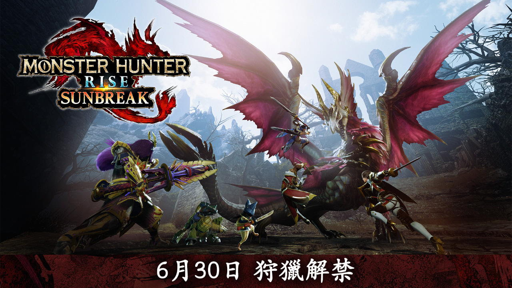
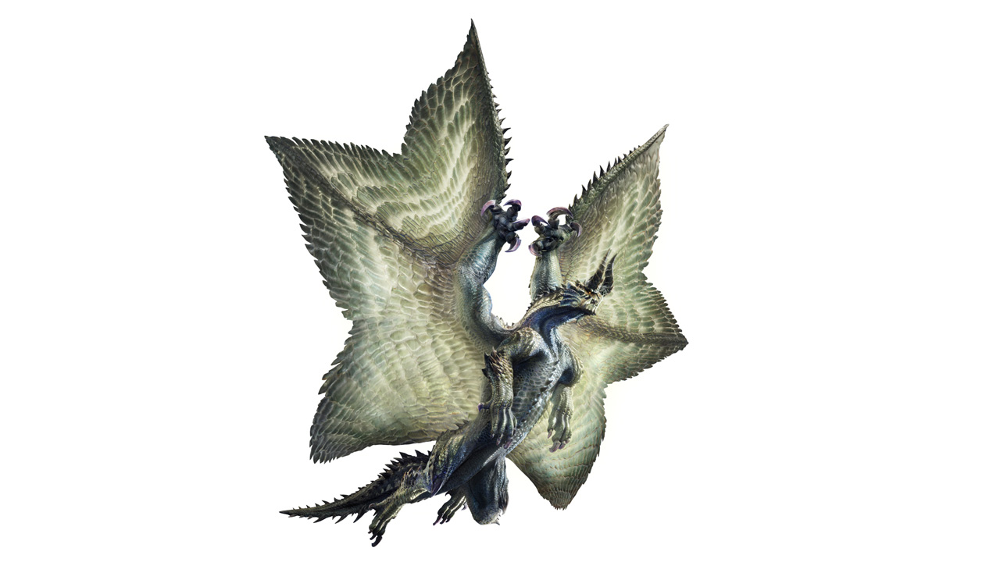
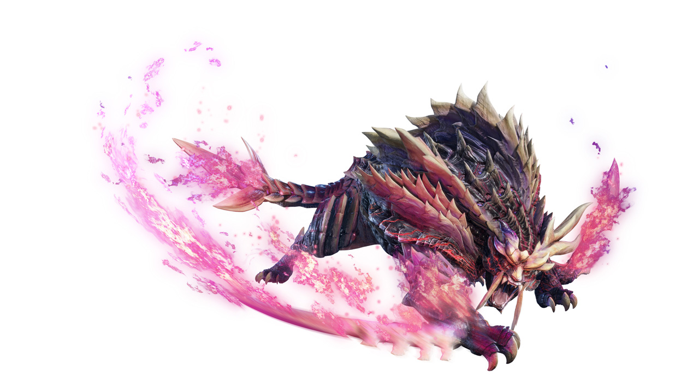
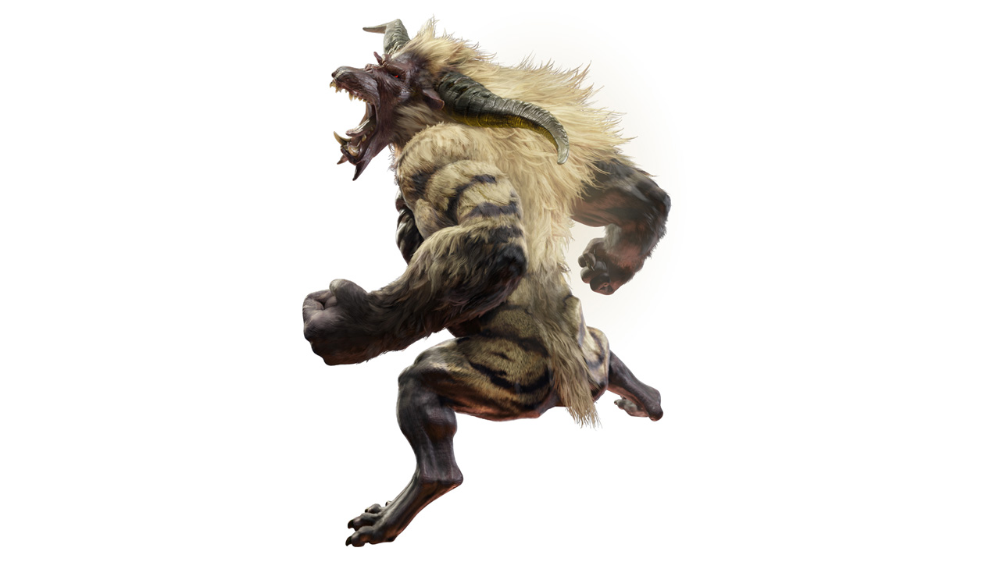
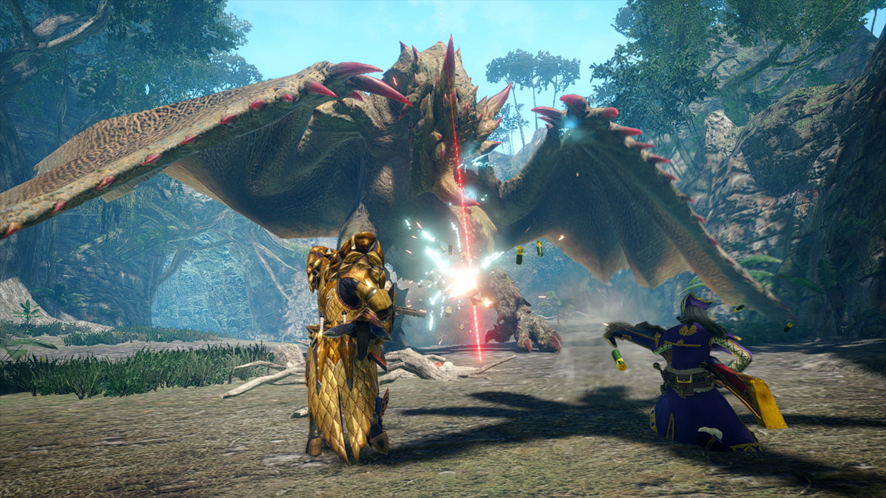
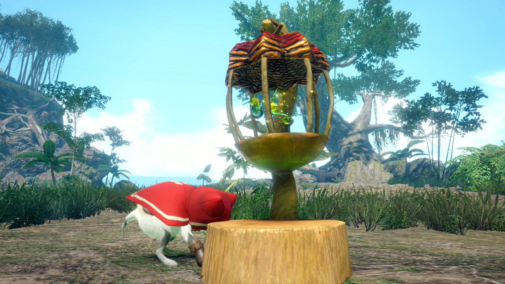
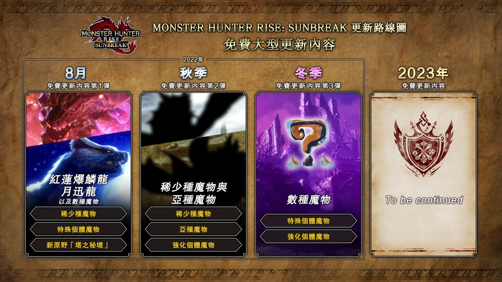

送上終於迎來狩獵解禁的《MONSTER HUNTER RISE: SUNBREAK》最新宣傳片, 以及有助推進《SUNBREAK》開始前的故事進度之強力裝備的發佈資訊!使《MONSTER HUNTER RISE》的世界進一步擴展, 可以更深入地享受這個狩獵世界的超大型擴充內容《MONSTER HUNTER RISE: SUNBREAK》現已迎來狩獵解禁。

使《MONSTER HUNTER RISE》的世界進一步擴展, 可以更深入地享受這個狩獵世界的超大型擴充內容《MONSTER HUNTER RISE: SUNBREAK》現已迎來狩獵解禁。
相关网站链接：
最新宣傳片現已公開，請務必觀看。
以下將會介紹在最新宣傳片中公開的魔物資訊, 以及有助快速推進《SUNBREAK》開始前的故事進度之強力裝備的獲取方法!
在最新宣傳片中，可以看到古龍「天迴龍」、「嗟怨轟天怨虎龍」、「激昂金獅子」的登場，現在就來介紹一下牠們有什麼特徵吧。
黑蝕龍歷經成長脫皮之後獲得新生的模樣。身披耀眼的甲殼，擁有能覆蓋全身的巨大雙翼。那美麗而神聖的姿態，使其獲得「天迴龍」之名。根據先人留下的文獻，據說牠曾廣泛散布黑色鱗粉，其量甚至多到足以覆蓋整座山，而最終鱗粉所到之處的生物無一倖免，全數滅絕。

怨虎龍的特殊個體，外觀變得更加令人畏懼。全身總是被鬼火覆蓋，腕刃較以往更加發達，甲殼也變得更加堅硬。曾有人目擊牠在與敵人交戰時會高度壓縮身上的鬼火，將其化為鬼火之刃並用於戰鬥。

金獅子的特殊個體。本來一般的金獅子在進入興奮狀態一段時間後，會變回黑毛的型態，防止過度消耗能量，但此個體則喪失了抑制興奮的手段。當此類個體的憤怒達到最高點時，將進入「激昂狀態」，鬃毛連同閃電豎起，宛如羅剎般將所有事物破壞殆盡。

倪泰教官將會於可跟故事中不同登場角色一同前往狩獵的單人遊玩專用「盟友任務」中登場！跟這位會向獵人教授有關狩獵的一切、非常可靠的恩師一同享受狩獵的樂趣吧。
相信片中還有其他十分讓人在意的內容，但請各位親身到遊戲中體驗吧！
|  |  |
詳情請瀏覽《MONSTER HUNTER RISE: SUNBREAK》官方網頁。

| 版本名称 | 卡带单价 |
|---|---|
| 《MONSTER HUNTER RISE》 | 361 |
| 《MONSTER HUNTER RISE 豪華版》 | 416 |
| 《Monster Hunter Stories 2: 破滅之翼》 | 672 |
如需购买，请登入账号填写您的购入信息：
賬號: